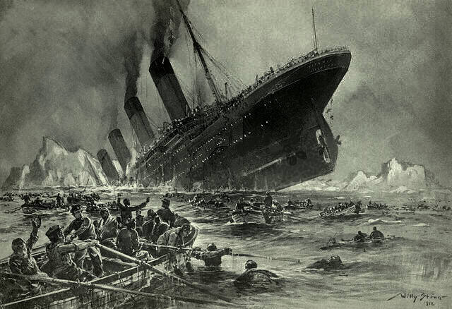

Introduction
Although an experienced and long-serving captain at the time he skippered the Titanic, today, as then, there are mixed opinions on his performance as Captain. Smith's judgement, decision-making and his culpability or otherwise are still debated today. Here we present the key facts about the life and career of Captain Smith, and leave it to the reader to judge whether he was a hero or otherwise.
Early Life
27 January 1850 - the date of Captain Smith's birth, in Hanley, Stoke-on-Trent, England.
86 Well Street - the address in Hanley where Edward was born (note: the house number is often, and wrongly, quoted as 51; this is a misreading of a reference to the 1851 census, within which Smith first appears).
07 October 1864 - the date on which Smith's father, Edward senior, died at home. Aged 59, he had finally succumbed to the phthisis (a form of pulmonary tuberculosis) from which he had been suffering for some time.
11 October 1864 - date Smith's father was buried, at Hanley municipal cemetery (in nearby Shelton).
1864 - the approximate year (exact date unknown) that Edward left Etruria British School and started work at Etruria Forge (this event may have been triggered by the death of his father).
14 - the approximate age at which Smith left school to work at the forge.
Career At Sea
17- the age at which Smith left the forge, possibly motivated by declining demand in the iron industry, and travelled to Liverpool to look for new opportunities working at sea.
05 February 1867 - the date on which Smith arrived in the city of Liverpool, travelling with friends and seeking work in the merchant navy. Smith signed up as an apprentice ship's 'Boy' (the lowest rank of ordinary seaman) on an American packet ship, the Senator Webber, under the captaincy of his half-brother Joseph.
12 February 1867 - the date on which Smith's first journey to sea began, a return trip to Hong Kong, then a busy and exotic international port, full of European, American, Australian and Asian shipping, and part of the British empire.
26 - the number of men and boys serving aboard the Senator Webber.
6 months - the length of the outward journey to Hong Kong, the Senator Webber arriving in August 1867.
200 - the approximate number of different ropes and their uses that Smith would have been required to learn, and quickly, an education that all sailors went through and giving the English language the idiom "knowing the ropes". This was just one area to learn, others including setting the sails, wind and weather, the intricacies of navigation, an understanding of draft and displacement, and learning how to load a ship to ensure an "even keel".
1871 - the year Smith was awarded a certificate of competency as Second Mate .
1873 - the year Smith gained his certificate as First Mate.
1875 - the year that Smith gained his Masters Certificate, allowing him to command vessels.
24 - the age at which Smith gained his Masters Certificate.
1877 - the year Smith first took command of a ship, the 1,000-ton trade vessel Lizzie Fennell, running goods between Britain and South America.
26 - the age at which Smith took command of the Lizzie Fennell, much younger than the average age that men typically gained a captaincy, which was then closer to 40.
1880 - the year Smith joined the White Star Line, the company he would stay with for the rest of his life, and served on his first passenger vessel, as fourth officer aboard the liner SS Celtic.
Did You Know?
In joining White Star Line Smith moved down a number of ranks, going from Captain to a junior officer position, but was happy to do so in order to gain the opportunity to serve on the larger, finer and more prestigious ships of the North Atlantic passenger crossings.
1882 - the year that Smith was promoted to second officer of the SS Coptic.
1885 - the year that Smith became first officer of the SS Republic I.
1887 - the year that Captain Smith took command of the SS Republic I.
37 - the age at which Smith captained this ship, the first passenger vessel he commanded both for White Star Line and in his career.
1888 - the year Captain Smith was awarded his Extra Master Mariner's Certificate.
Did You Know?
Captain Smith initially failed the examination for his Extra Master Mariner's Certificate, on his navigational skills. He was re-tested the following week and this time he passed.
1888 - the year Captain Smith joined the Royal Naval Reserve, meaning that he could be called upon to serve in the Royal Navy during wartime, and could add the letters 'RNR' after his name.
18 - the number of White Star Line vessels commanded during his career.
43 - the number of years of experience at sea at the time Smith took command of Titanic.
32 - the number of years served with the White Star Line.
26 - the number of years of experience Captain Smith had gained in traveling the North Atlantic at the time he captained the Titanic.
15 April 1912 - the date of Captain Smith's death (he died when the ship sank).
62 - Smith's age at the time of his death. Some believe he intended to retire after completing Titanic's return trip, although the White Star Line had plans for Smith to command Gigantic on her maiden voyage.
